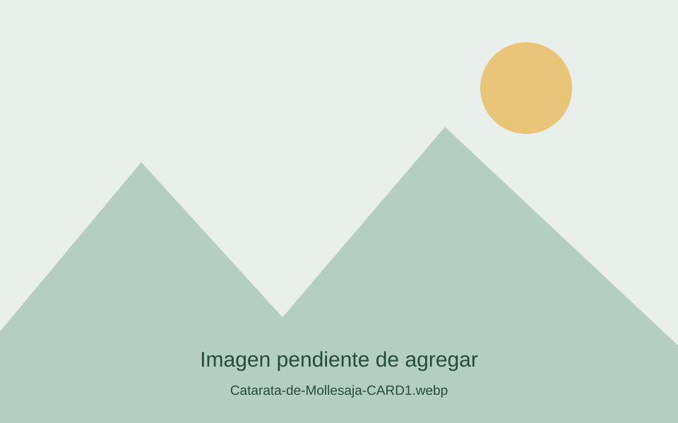
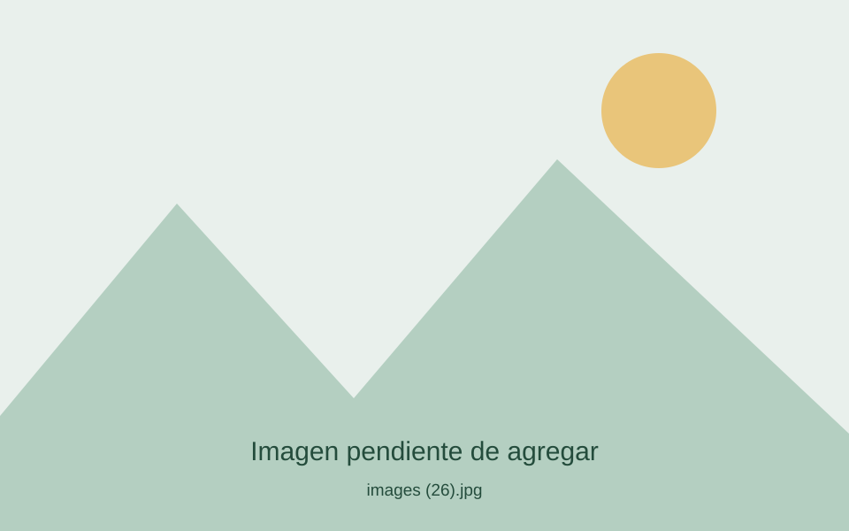

🔗 Más información
Cataratas de Mollesaja
Un atractivo natural de Moquegua que destaca
por sus caídas de agua y paisajes.
Ver más
Las Cataratas de Mollesaja son un destino
ideal para disfrutar de la naturaleza,
observar el paisaje y realizar fotografías.
 🔗 Más información
🔗 Más información
Valle de Omate
Un hermoso valle de la provincia General
Sánchez Cerro, rodeado de paisajes naturales.
Ver más
Omate es conocido por sus paisajes agrícolas,
sus tradiciones y su tranquilidad.
Es un destino para conocer la cultura local.
🔗 Más información
Playa Pozo de Lizas
Una de las playas más conocidas de Ilo,
ideal para disfrutar del mar.
Ver más
Playa Pozo de Lizas es un destino
turístico visitado durante el verano.
Ofrece espacios para descansar
y disfrutar del paisaje costero.
🔗 Más información
Malecón Costero de Ilo
Un lugar turístico para caminar
y contemplar el océano Pacífico.
Ver más
El Malecón Costero permite disfrutar
de la vista del mar, tomar fotografías
y conocer parte de la ciudad de Ilo.
🔗 Más información
Museo Contisuyo
Un importante museo que conserva parte
de la historia y arqueología de Moquegua.
Ver más
El Museo Contisuyo presenta colecciones
arqueológicas que permiten conocer
las antiguas culturas que habitaron
la región de Moquegua.

🔗 Más información
Geoglifos de Chen Chen
Un atractivo arqueológico que representa
parte del patrimonio cultural de Moquegua.
Ver más
Los geoglifos de Chen Chen son figuras
realizadas sobre el terreno que muestran
expresiones culturales de antiguos
habitantes de la región.
🔗 Más información
Plaza de Armas de Moquegua
Un hermoso lugar histórico ubicado en el
centro de la ciudad de Moquegua.
Ver más
La Plaza de Armas destaca por su pileta
ornamental, jardines y edificios históricos.
Es uno de los principales atractivos
turísticos de Moquegua.
🔗 Más información
Cerro Baúl
Importante sitio arqueológico de Moquegua,
conocido por su forma de meseta.
Ver más
Cerro Baúl se encuentra en la provincia
de Mariscal Nieto. Conserva vestigios
arqueológicos de antiguas culturas
y ofrece impresionantes paisajes.
🔗 Más información
Mirador Cristo Blanco
Un atractivo mirador turístico desde
donde se aprecia la ciudad de Moquegua.
Ver más
El Mirador Cristo Blanco permite
disfrutar de vistas panorámicas
de la ciudad y del valle de Moquegua.
Es ideal para tomar fotografías.